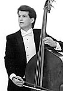

|  |
Peter Dominguez grew up in Milwaukee, WI and began his double bass studies with Bernard Stepner and Clyde Russell in addition to performing with the Milwaukee Youth Symphony Orchestras. At age 16, he joined the musicians union and began performing Jazz with his pianist/vocalist father Frank DeMiles. Peter earned his baccalaureate and masters degrees from the University of Wisconsin - Madison studying with both Roger Ruggeri and Richard Davis. In 1981, Peter was the first recipient of the Milton J. Hinton scholarship competition award. He went on to complete doctoral of musical arts course work at the University of Miami - Coral gables with Dr. Lucas Drew. Peter continued his double studies with Robert Gladstone while teaching at Michigan State University. Peter is currently Professor of Jazz Studies and Double Bass at Oberlin Conservatory of Music.
Peter has been a member of the International Society of Bassists since 1974 and has served on its Board of Directors. He also has served on boards of the Greater Lansing Symphony Orchestra, the Jazz Alliance of Michigan, and the American Sinfonietta. He currently sits on the board of the Richard Davis Foundation for Young Bassist and co-coordinates the foundations annual conference in Madison, WI. Peter has adjudicated the ISB's International Jazz Bass competitions from 1993-1997 and was featured in the 1997 International Portrait Calendar.
Principal bass since 1991 with the American Sinfonietta, Peter has performed throughout America and Europe in solo performances with the Miami String Quartet, the Los Angeles Piano Quartet, the St. Petersburgh Quartet, the Renaud Chamber Players, The Fontana Chamber Players and as principal bass with the Greater Lansing Symphony Orchestra (12 years), Jackson Symphony, Kalamazoo Symphony, and as section bassist with the Miami Chamber Symphony, the Florida Philharmonic and the Detroit Symphony Orchestra. Peter has also appeared in Jazz performances with Gary Bartz, Marcus Belgrave, Gene Bertoncini, Benny Carter, Tommy Flanagan, Billy Hart, Jon Hendricks, J.J. Johnson, John Lesiw, Mark Murphy, Woody Shaw and Ira Sullivan, His recordings can be found on ELF, Fossil, Flying Fish, MiJawa, Natural Sound Fields, Pug, Smitty, Summit, Wheatland and Winterfare labels.
|